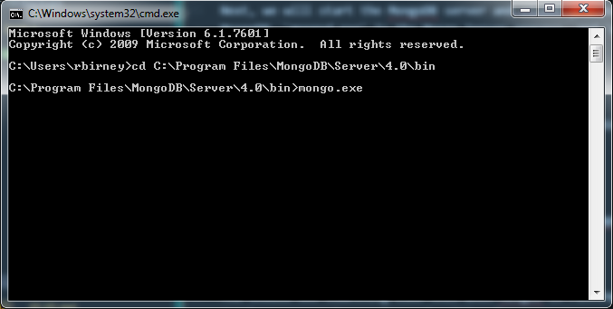
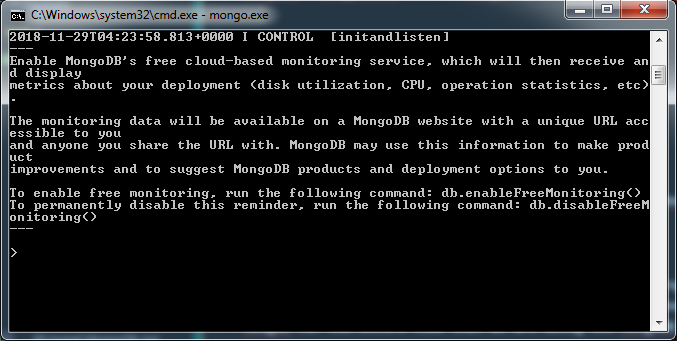

Objectives
In this lab, we will install and test MongoDB, a non-relational database.
MongoDB installation
MongoDB is a non-relational database that stores data in flexible, JSON-like documents, meaning fields can vary from document to document and data structure can be changed over time. In this lab, we will download and install MongoDB and create a test document.
Go to https://www.mongodb.com/download-center/community and select the correct installer for your operating system.
Once the installer has downloaded, run it. Choose the following options during installation:
- Accept the license terms and agreement
- Choose complete as the setup type, to install all features
- Under Service Configuration, the "Install MongoD as a service" option should stay checked
- Uncheck the Install MongoDB Compass option. (MongoDB Compass is a graphical user interface for MongoDB; we will use the console for our commands. Compass causes installation to hang on some operating systems, so uncheck for now; it can be installed separately later if you wish to try it out).
- Click Install to begin the installation.
To confirm that MongoDB has installed successfully, go to the install location (probably C:\Program Files\MongoDB\, or the equivalent location on your system). You should see a MongoDB folder. Go to the Server\4.0\bin folder and view the files there.
Getting started with MongoDB
Now, we will take the first steps in starting to use MongoDB. We need to first create a storage location, and then start the Mongo server and client processes from the command prompt.
Create storage location for MongoDB
Open a command prompt (your regular system command prompt, not the Mongo shell) and run the following commands to create a folder on your C: drive called db inside a folder called data. This location is where MongoDB will store your data files.
c:\
md data
md data\dbYou should now see a folder on your C: drive called data\db. Note that this step only needs to be done the first time you use MongoDB.
Start server and client processes
Next, we will start the MongoDB server and client processes. We will need to start both of these processes every time we use MongoDB. mongod.exe is the Mongo Server process, and mongo.exe is the client process.
Start mongod.exe (server)
- In your command prompt, navigate to the bin folder within the command prompt. The location is probably something like
C:\Program Files\MongoDB\Server\4.0\bin.
- Now enter the command
mongod.exe. This starts the MongoD application, which is the database server.
You should see something like this when MongoD is running. Note the part that says "waiting for connections"; this indicates our database server is running and waiting for users to connect to it. We will need to leave this command prompt open and running MongoD for the entire time that we are using the MongoDB database.
Start mongo.exe (client)
- Open a new command prompt. Remember to leave the other one open too.
- Once again, navigate to the
C:\Program Files\MongoDB\Server\4.0\binfolder. - Then, enter the command
mongo.exe; this will start the Mongo client process.

When Mongo has started, you will see something like the following. You should see a blinking cursor at the prompt, indicating that it is ready for commands.

Creating your first document
We will delve into the CRUD (Create, Read, Update and Delete) functions in MongoDB in more detail next week. This week, we will create a very simple document and then use find() to retrieve it.
- Use the
show dbscommand to list the databases currently held in the MongoDB system.
Create
- The
use testcommand will switch to the test database if it exists already or create it if it doesn't exist; so in this instance, running the use test command both creates a database called "test" and switches to that database.
- We will now create our first document in MongoDB. This is a sample document with a range of different datatypes used:
db.test.insert(
{
item: "box",
qty: 20,
price: 14.99,
available: true,
timestamp: new Date(),
itemcodes: [1002, 1003, 1004],
supplierinfo: { name: "Boxes Inc.", location: "Ireland" }
}
)When a document has been inserted successfully, you will see the following output:
Read
To read from a MongoDB database, the find() operation is used. To find the document we just created, use the following:
db.test.find()This prints the document, although it's not very readable. MongoDB supports chaining of functions (meaning we can call multiple operations at the same time). The pretty() function produces more readable results.
db.test.find().pretty()
We can now see the document we created, along with the timestamp that was assigned to it when we called the Date() function and the ObjectId that MongoDB assigned to it.
Shutting down the processes
It's a good idea to shut down the processes correctly each time you've finished using MongoDB; don't just close the command prompt windows when you're done. Shutting down correctly ensures that your data has been committed and saved.
Shut down mongo.exe
In the mongo.exe window, type 'exit' to shut down the process. It will, very politely, say 'bye' and then it's safe to close the window.
Shut down mongod.exe
In the mongod.exe window, use the CTRL + C command to shut down. When you see this output and it returns to the command prompt, it's safe to close the window.